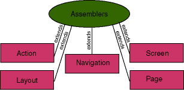

The Apache Turbine project
The Apache Turbine project
NOTE
This specification was originally written for the Turbine 2.1 release. While it still holds true for Turbine 2.3 in many parts, it might be outdated in details. It should serve to give you a "broad" view of the Turbine framework, not a detailed description how things work. Turbine 2.4 uses a very different concept, so this specification no longer applies to it.
Specification
Turbine is made up of five different modules which serve a specific service within the Turbine framework. In order for the reader to understand the general flow of the Turbine framework, each of these modules is explained in detail below.

Action
The Action module represents a chunk of code that performs task. For example, when a user submits an Html form, one of the hidden fields is which Action to execute in order to process the form information. The processing generally includes form validation as well as storing the form information into a database. The Page is responsible for executing the Action before the Screen is executed. That way, the Action can help determine which Screen is executed depending on the results of the Action.
The process looks like this:
| HTTP Client -> | Execute Turbine Servlet -> | Execute Page -> | Execute Layout/Screen/Navigation -> | Return Page Content |
| If Action is defined then... | ||||
| Execute Action |
This model makes it really easy to separate the POST (GET works here as well) data processing into component modules that can be re-used. For instance, the Action "Logout" can be re-used from a number of different points in the system. It performs one single function and performs it well. The advantage of this type of behavior is that it prevents you from putting logic for handling form data into your servlets. This is great for those of you who want to integrate EJB's into Turbine because your Action's can simply make calls to your EJB's to process business logic.
Page
The Page module is the first module in the chain of execution for the Page generation. It is considered to be the module which contains the rest of the modules (Action, Layout, Screen and Navigation). The Page module checks to see if there has been an Action defined in the request. If so, it attempts to execute that Action. After the Action has been executed, it asks the set Screen object for its Layout. Page then attempts to execute the Layout object which the Screen returned. Please note that the Action module can modify which Screen is executed. Also note that the Screen module has the option to override the Layout setting which defaults to "DefaultLayout." (Note: the DefaultLayout value is actually defined in the TurbineResources.properties file. This way, it is a simple property change instead of having to re-compile the Turbine code for your own purposes.
Screen
The Screen module is essentially considered the "body" of the webpage. The Layout module executes the Screen module. This is where the Html of the page is generated. It is entirely possible to call external code here. For example, you can call an EJB to provide you some business data which is then transformed using a tool such as Cocoon to render the business data into HTML which is then transfered to the client.
Navigation
A website generally has a top and bottom navigation scheme. This is generally defined as the header and footer of the website. The Navigation is executed by the Layout. There may be multiple Navigation modules that the Layout executes (ie: the side, top and bottom parts of the page). Since it is generally common for multiple webpages to contain the same navigation, it is most common to define different Layouts for screens with very different Navigations. The advantage of using a system like this is that you can have multiple Navigations that are conditionally included and excluded in the Layout. Like Screens, the Navigation modules can also call out to external code, such as EJB's to get the business logic that is responsible for rendering the Html that is sent to the browser.
Layout
The Layout module is called from the Page module. This modules defines the physical Layout of a webpage. It generally defines the location of the Navigation portion (ie: the top and bottom part of the webpage) as well as the location of where the body (or Screen) of the page is. The Layout module executes the Screen module to build the body of the webpage. It executes the Navigation modules to build the portions of the webpage which define the navigation for the website.
Module object Encapsulation
>

Loaders
>

The loaders are responsible for dynamicially loading each of the five modules. These loaders have an option to cache the module objects in memory for extremely fast loading times.
The loaders use intelligent factories in that we have added a property to TurbineResources.properties that allows you to define the "Loader Classpath". In other words, it is possible to physicially keep all of your web applications modules in their own package classpath and the loaders will be responsible for finding the right file to execute.
This feature is great because it allows you to upgrade the core Turbine framework without having to make any modifications to your existing code! It also allows you to simply distribute your web application as a standalone system and then have your users download the Turbine framework as a separate requirement. Then, multiple web applications can be combined to form a complete system.
Note that each of the modules must be multithread safe since multiple threads may try to execute a single module at the exact same time. These rules apply to general servlet programming so they are not that difficult to understand. The basic rule is to not try to define any class global variables within each of the modules unless it has been wrapped in a syncronized statement.
Factories
Each of the loaders mentioned makes use of one or more factories to create the different modules. By default the only factory that is enabled is the Java factory that creates requested modules from java class files.
You can easily create your own factories by implementing a simple interface and registering them in the TurbineResource.properities. This allows you a lot of flexibility in the sense that you can load Turbine modules from any source that is able to provide you with a java object, for example an RMI server or scripting options like Rhino and JPython. Keep in mind that factories must be thread-save (the same applies to modules).
System Flow
When a new request comes in, the Turbine servlet first checks to make sure that a ServletAPI HttpSession object exists for the user making the request. If this HttpSession object does not exist, a Http redirect header is returned that redirects the browser to the "homepage" of the website (by default it is the "Login" screen and this can be configured via the TurbineResources.properties file). This redirect attempts to set a cookie that is unique for the visitor. If the cookie is not accepted, it will not be returned in the new request for the "homepage" and thus further session tracking will happen with modified URL's that contain the session information within them.
Note: If you do not wish to require the user to login to the system with a username and password before executing the pages, then set the "Login" screen to be something else. This is done in the Turbine Servlet under the data.session.isNew() check. Until the user actually logs in, it is only possible to store temporary data for that users session. When the user logs in, it is possible to store permant information by simply putting data into a hashtable. The implementation of the User object (ie: TurbineUser) in the framework takes care of the issues involved with serializing that information to a resource such as a database or file on the hard disk.
After a session with the user has been established, Turbine caches a few frequently used pieces of data in the RunData object. This object is created for each and every request and is passed around the system in order to provide all of the modules with access to request specific information such as a database connection, GET/POST/PATH_INFO (GPP) data (via the ParametersParser object), the Action and Screen names (made available from the GPP data), and the Document object where you put your Html output. The RunData object should never be stored in a global context because it is not multithread safe and each of the modules is expected to be multithread safe. Also, the RunData object may or may not contain information that should be persistent across requests.
The Turbine servlet then checks to see if a user is attempting to Login to the system by looking at the defined Action and checking to see if the value is "LoginUser." If so, it will execute the "LoginUser" action (again, the action to execute here can be defined in the TurbineResources.properties file). Within this action, it is the coders responsibility to define the procedure for authenticating the user with the validateUser() method. This will probably mean validating the username and password against a database. The abstraction of Action modules makes it easily possible to have multiple authentication methods.
Once the user has been validated (the RunData.save() method has been called) or not validated, then the SessionValidator action is executed from within the Turbine servlet. The SessionValidator action checks to see if a user has been logged in. If the user has not been logged in, then the Screen is set to be the "Login" screen. If not, then the users last access datestamp is updated. If you would like to allow the user to view multiple pages without the need to login first, you will need to implement your own version of SessionValidator that just returns nothing as a result. Then, for the pages that you will want to make secure, you should define a Layout that executes the SessionValidator action to make things secure. Then, your Screens should call that "secure" Layout.
Next, the "DefaultPage" page is executed by the Turbine servlet. The "DefaultPage" starts a chain of events that eventually leads to a complete webpage development. First, the DefaultPage attempts to see if an Action has been defined. If so, then it attempts to execute that Action. See the definition of Action and Page above for more information. After the Action has been executed, the Screen is then asked for its Layout and the Layout is then executed.
It is the Layouts responsibility to then execute the Navigation and requested Screen. After the Layout has executed its parts, it is finished and control is returned to the Turbine servlet which then sends out the page information.
Access Control Lists and User Permissions
We have provided a beautiful system (because it is so simple and powerful) for controlling what a User is allowed to do and not allowed to do. It is based on the following concepts:
One or more Roles are assigned to a User. A Role is a collection of one or more Permission's. The AccessControlList uses an AccessControlBuilder that allows you to determine whether or not a User has a Permission to do something or not.
Thus, a User can have both the "Admin" and "Guest" Role. Within those Roles are the sets of Permissions that are allowed. In the "Admin" Role, one might have the Permission, "Edit Users". Then, it is simple to use the AccessControlList to check to see if the User has the permission "Edit Users" or if the User has the Role "Admin", in which case, it does not matter what the Permissions are.
You will then use this system within any of modules to determine whether or not to execute some code. This will provide you with both a Page level of security (does the User have access to this page) as well as a Content level of security (does the User have access to see the content on this page, ie: hide/show content based on what Role the User is).
Exception Handling
During execution, if at any time an exception is raised, the Turbine servlet catches that exception and attempts to execute the "DefaultPage" with the Screen set to be "Error". This is a simple debugging screen which displays a java stack trace as well as any CGI environment variables that have been set. It is possible to modify this Screen to display anything that you wish as well as define an alternative error screen within your web application via the TurbineResources.properties file. The idea is that all errors can be trapped in one location in order to make debugging as simple as possible as well as provide a consistent error interface to the users.
Utility Code
There is a number of utility classes included with Turbine.
The Database pooling classes are helpful for defining the methods for obtaining a connection to the database. This code is implemented as a singleton system so that all you need to do is get an instance of the database class, get a connection and go. There is no need to pass around a Connection object. Turbine comes with pool implementations for many of the most popular databases. Creating your own is quite simple as well, all you need to do is look at the existing code and create your own. By default Torque is used as ORM-Mapper, find more info here. If you need help or want someone to create one for your database, simply ask on the mailing list.
The *Peer classes are a great idea on how to abstract the database accesses so that all you need to do is pass in a Criteria object and execute doInsert(), doSelect(), doUpdate() or doDelete(). While not necessarily part of the Turbine framework, because each implementation is different depending on your needs, it is a great model to work from. Take a look at the TurbineUserPeer.java file for a good example of this methodology in use.
The ParameterParser class takes all of the GET/POST/PATH_INFO data and parses it into a hashtable where it can be easily retrieved in a number of forms with the provided get* methods. This is how you can have access to form data that has been posted by a users web browser.
The DynamicURI class should be used whenever a URI is needed within the system. Each portion of a URI can be defined in order to produce a custom URI that also includes the session tracking information if it exists. It is highly recommended that you use this class for generating all of your URI's for your application because it will allow you to easily add global functionality to your system.
The Mail classes make it easy to send email via the JavaMail API's. These classes are just very simple classes and there is not a huge amount of functionality here. Essentially they allow you to get the job done and that is about it. Contributions to improve these classes are appreciated.